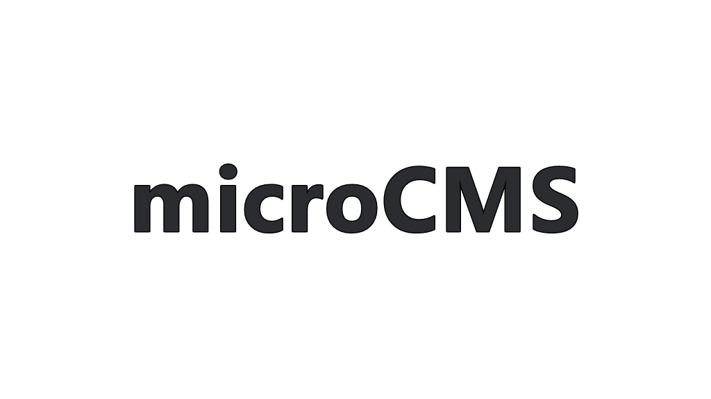
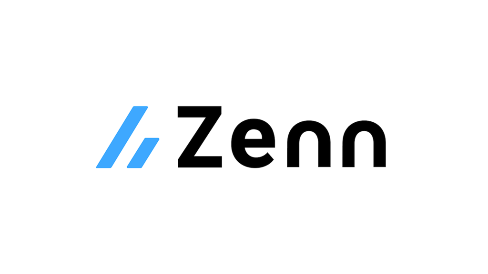

記事一覧

2023/07/30 11:45:00
2023年7月に遂にエンジニアデビューしました。
念願のエンジニアとして現場経験を積むことが今月からできております。1年3ヶ月程、独学や就活をしてまいりましたがひとまずは現場経験を日々できていることを大変嬉しく思います。
2023/04/15 07:30:00
記事データ作成テスト_md変換編
Markdownの記事をpushする際の見出しの設定をする。

2023/04/12 23:45:00
microCMSの記事は検知可能か？
2つ目ののmicroCMSです。

2023/04/12 23:00:00
Markdownブログ運用
NetlifyでのBlog運用にあたってデフォルト値を設定することは可能
2023/04/11 20:00:00
0412microCMSで作成したブログを更新
今回は、はじめてのmicroCMSをNext.jsとNetlifyを活用しGithubActionsを利用して作成しました。

2023/04/11 17:00:00
Next.js×NetlifyでMarkdownブログ環境を構築
Next.jsとNetlifyでMarkdownのブログ記事を作成ができるCMSを導入しました。

2022/12/22 23:00:00
JavaScript基礎学習①
フロントエンド言語を学習する際に必須なJavaScriptの基礎を習得していきます。

2022/12/17 23:00:00
読んだQiita記事一覧
Qiitaを必要に応じて読み、拝見したものを記録します。

2022/12/12 23:00:00
読んだZenn記事一覧
Zennを必要に応じて読み、拝見したものを記録します。

2022/11/25 23:00:00
WEB3層構造とは？
Webブラウザからのリクエストを受けて返すまでの「Webサーバー、APサーバー、DBサーバー」で編成されるWebアプリケーションの構造化の原則を定義しています。

2022/11/23 23:00:00
WEB APIとは？
様々なWEBサービスのWEB APIを利用することで、自身の作成したWEBアプリに便利な機能を追加することが可能です。
2022/11/22 23:00:00
WEBサーバとは？
apacheとnginxの違いを調査し、技術選定理由とバックエンドのチューニングのための知識をつけます。